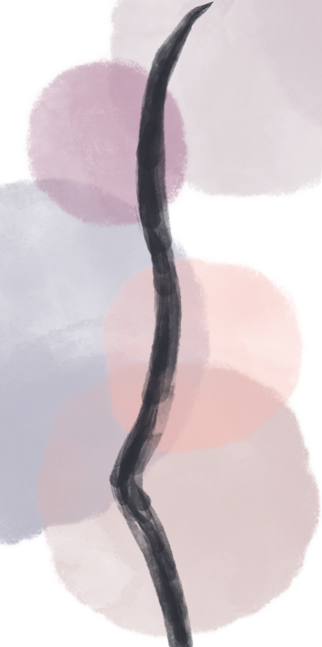
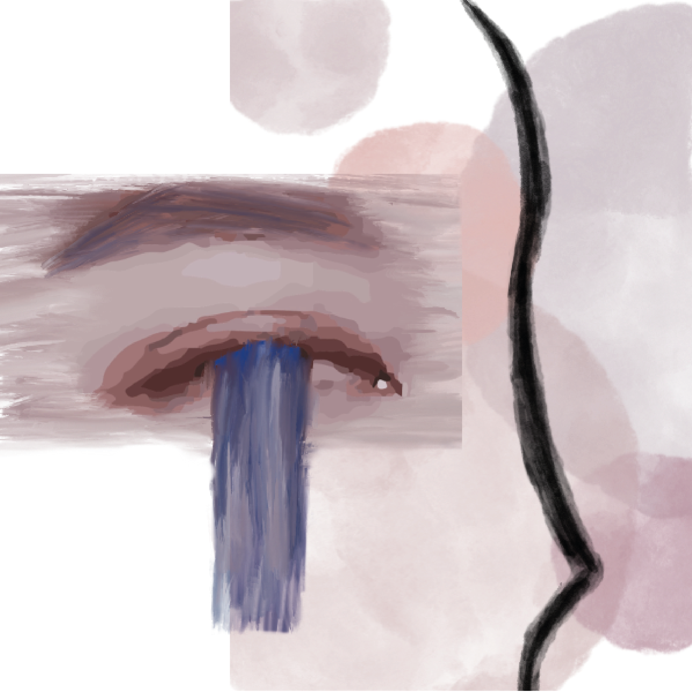
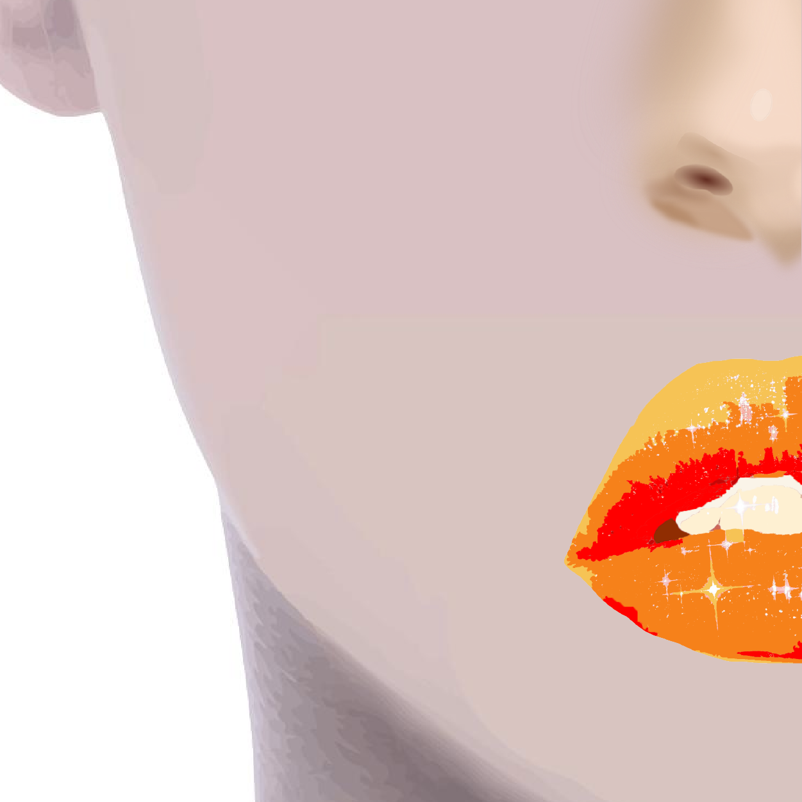
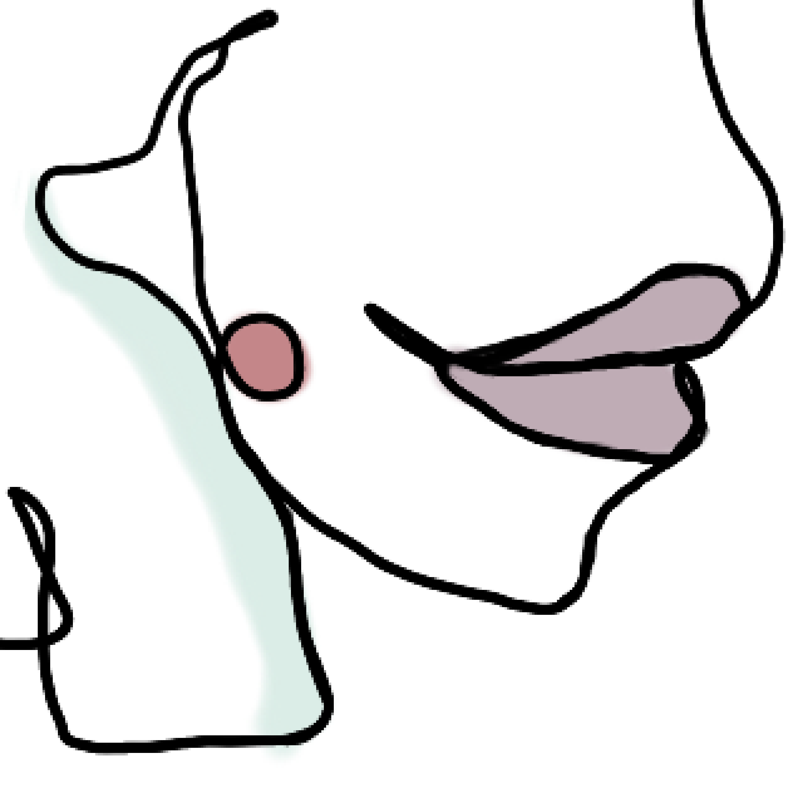

Project 2 - Exquisite Corpse
By Yingying Chen & Michelle Lalehzar




Introduction
The inspiration of this project is a campiagn I recently read in an article about colors and how it reflects versatile meanings.So we decided to relate facial parts with colors to demonstrate different emotions. We share very constrasting style and the result is quirkly matched in some way.
Rules
- 4 Square Segments (600px * 600px)
- Line art inspired
- No color limitation
- Showing only facial parts
- Review after finished and make changes after seeing the work